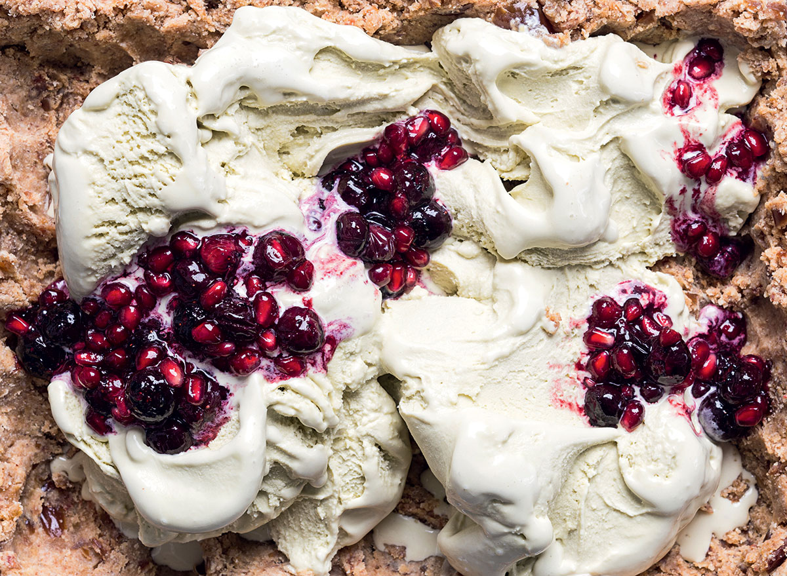

Almond and pistachio pie

Almond and pistachio pie
Ingredients
For the base:
- 240 g almond flour
- 8 T almond nut butter
- 12 fresh Medjool dates, stoned and finely chopped
For the berry drizzle:
- 2 T honey
- 180 g blueberries
- 75 g pomegranate rubies
- 1.5 litres Woolworths Extremely Creamy pistachio ice cream, for serving
COOKING INSTRUCTIONS
- Place all the ingredients for the base in a large bowl and mix until well combined.
Press the mixture into a 22cm x 28cm rectangular dish and place in the freezer until ready to serve, or leave at room temperature.
- To make the berry drizzle, heat the honey in a nonstick pan over a medium heat. Add the blueberries and allow the mixture to caramelise slightly. Remove the pan from the heat and stir through the pomegranate rubies. Allow to cool.
- Scoop the ice cream into the base and spoon over the berry drizzle. Serve immediately.
Cook's note: Combine the flavours of fresh dates, pistachios, almonds and pomegranate rubies in this dessert inspired by the Med.